XRP est en train d'exploser. En ce moment, il se négocie à 3,12 dollars et la dynamique derrière lui est absolument folle. Mais voici une vraie question. Jusqu'où peut-il monter ? Personnellement, j'achète du XRP depuis les creux du marché baissier et, même maintenant, j'en achète encore plus chaque jour. Et dans cette vidéo, je vais vous montrer exactement où je prévois de vendre, jusqu'où je pense que XRP peut réellement monter, et surtout la logique étape par étape et les calculs que j'utilise pour déterminer ces objectifs. Car voici la vérité, alors que la plupart des gens se concentrent sur ce qui s'est déjà produit, nous sommes ici pour gagner de l'argent sur ce qui va arriver.
Interface & Outils : Graphique de trading (type TradingView)
Contenu textuel & Code : Courbe de prix montrant une explosion haussière verticale sur la droite, avec le texte "How high" affiché au premier plan.
Action / Démonstration : Illustration visuelle de la flambée du cours du XRP et de la question sur son potentiel de hausse.
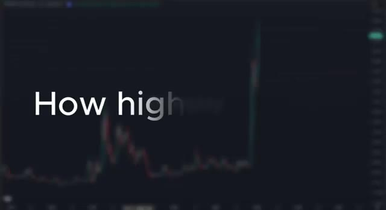
🔍 AgrandirEntrons dans le vif du sujet. Alors d'abord, pourquoi est-ce que j'achète encore du XRP, même à 3,12 $ ? Pourquoi est-ce que je n'ai pas encore vendu ? Soyons honnêtes, 3,12 $ c'est déjà une victoire énorme par rapport à là où nous en étions. Pour beaucoup de gens, ce serait le moment de prendre leurs profits et de verrouiller tout ça. Mais pour moi, je suis dans ce milieu depuis trop longtemps pour abandonner juste au moment où ça devient intéressant. Nous avons traversé des années de suppression, de poursuites judiciaires, de FUD et de frustration.
Interface & Outils : Graphique TradingView affichant l'historique des prix de la cryptomonnaie XRP de 2022 à 2025.
Contenu textuel & Code : Chandeliers japonais hebdomadaires montrant une longue période de consolidation à bas prix (0,40$ - 0,60$) suivie d'une forte explosion haussière en 2025 atteignant un niveau proche de 3,12$ à 3,50$. Le cours actuel affiché sur l'axe des ordonnées est de 3,1501$.
Action / Démonstration : Présentation de l'évolution macroéconomique et de la flambée récente du cours du XRP pour illustrer la performance actuelle du jeton.
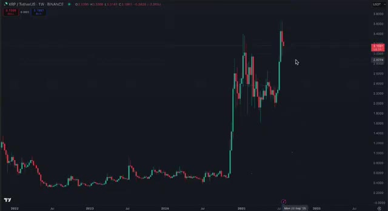
🔍 AgrandirEt maintenant que la cassure se produit enfin, ce n'est pas le moment d'encaisser. C'est le moment de surfer sur la vague. Je me dis depuis des années que 10 dollars par XRP, ce n'est rien. Et honnêtement, je l'ai tellement dit que j'ai fini par y croire sincèrement. À l'époque où je parlais d'un XRP atteignant 10 dollars, les gens riaient. Mais nous avons continué à accumuler. Nous avons continué à y croire. Et toutes ces discussions sur le procès de la SEC et la pression réglementaire, tout cela n'a fait que mener à ce moment précis.
Interface & Outils : TradingView / Binance
Contenu textuel & Code : Paire XRP/USDT, chandeliers hebdomadaires (1W), ligne de tendance baissière bleue tracée sur plusieurs années, prix actuel autour de 3,15 $ avec une forte impulsion haussière récente.
Action / Démonstration : Analyse technique du graphique du XRP mettant en évidence la cassure de la ligne de résistance oblique de long terme.
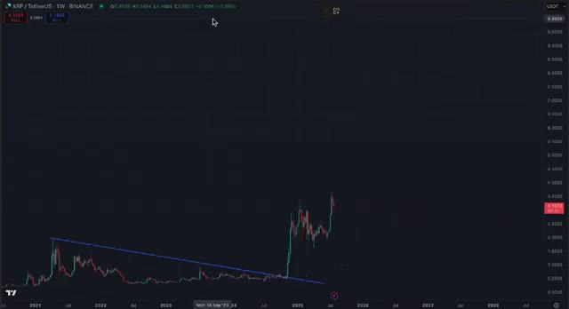
🔍 AgrandirParce que maintenant, toute cette frustration se transforme en carburant. Et c'est pour ça que je suis toujours là, plus optimiste que jamais. Laissez-moi vous dire quelque chose d'important. La plupart des gens n'ont aucune idée de la force réelle de la communauté XRP. Quand on demande aux détenteurs à quel prix ils préviennent de vendre, ils ne disent pas 4 dollars. Ils ne disent pas 10 dollars. Ils disent, je ne vends pas en dessous de 100 dollars. Certains disent même 500 ou 1 000 dollars. Maintenant, je ne dis pas que ce sont des objectifs réalistes pour ce cycle. Mais le fait est que, lorsque les gens croient en un projet aussi fortement et lorsqu'ils refusent de vendre,
Interface & Outils : Réseau social X (anciennement Twitter).
Contenu textuel & Code : Publications de comptes crypto sur X évoquant des prédictions de prix haussières pour le XRP (objectifs allant de 33 $ à 1 000 $) et graphiques d'analyse technique associés.
Action / Démonstration : Consultation et présentation de publications communautaires sur X illustrant l'optimisme et les prédictions de prix haussières des détenteurs de XRP.
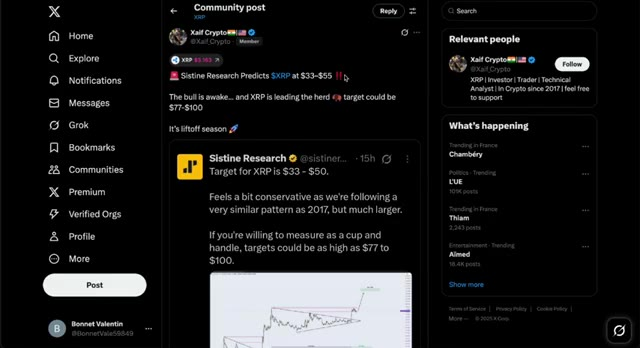
🔍 Agrandir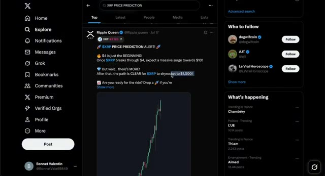
🔍 Agrandircela crée une pression haussière énorme. Et c'est exactement ce qui se passe en ce moment. Laissez-moi être clair. Je n'ai absolument aucun projet de vendre le XRP que je detiens sur mon Ledger. C'est du long terme. C'est intouchable. À la place, ce que je fais, c'est trader les mouvements sur Weeks. En fait, l'un de mes trades récents sur le XRP a transformé 2 000 dollars en près de 60 000 dollars de profit. En ce moment, si vous vous inscrivez sur Weeks en utilisant le lien ci-dessous, vous pouvez obtenir accès à un bonus allant jusqu'à 30 000 dollars rien qu'en déposant et en tradant. Ce n'est pas une blague.
Interface & Outils : Plateforme d'échange WEEX (interface de trading Futures) et interface de lecteur vidéo YouTube.
Contenu textuel & Code : Graphique en chandeliers japonais XRP/USDT (prix actuel autour de 3.1496 USD), indicateur de volume (Volume SMA 9), carnet d'ordres en temps réel et panneau de configuration des ordres de trading.
Action / Démonstration : Présentation de la plateforme WEEX et analyse technique de la paire XRP/USDT sur graphique de 4 heures.
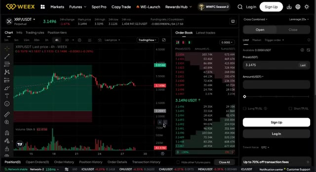
🔍 AgrandirC'est la plus haute offre de bonus que j'ai vue en 2025 jusqu'à présent. Donc si vous voulez suivre ma configuration de trading exacte, consultez le lien dans la description. Parlons des objectifs de prix. En 2017, le XRP a atteint 3,50 $. Le Bitcoin est passé de 20 000 $ à 70 000 $ lors du dernier cycle, soit une multiplication par 3,5. L'Ethereum est passé de 1 500 $ à 4 500 $, soit une multiplication par 3. Donc logiquement, je pensais que le XRP passerait de 3,50 $ à au moins 9 $ à 12 $ dans ce cycle.
Interface & Outils : WEEX et TradingView
Contenu textuel & Code : Offres de bonus et coupons pour nouveaux utilisateurs (10-100 coupon, 20 USDT de dépôt) sur WEEX ; graphique en chandeliers Bitcoin avec données de prix historiques et indicateurs de volume sur TradingView.
Action / Démonstration : Présentation des bonus de la plateforme d'échange et analyse historique des prix du Bitcoin.
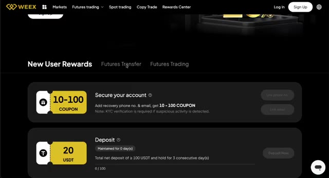
🔍 Agrandir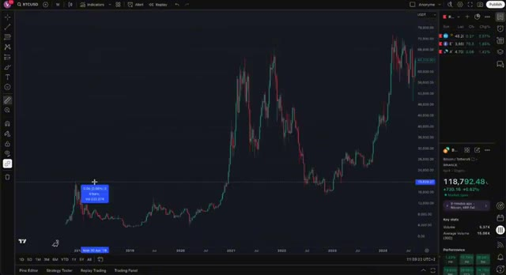
🔍 AgrandirC'était mon estimation prudente et elle est basée sur des cycles historiques, pas sur du "hopium". Mais ensuite, j'ai réalisé quelque chose. Si le XRP avait réellement participé au bull run de 2021, il aurait probablement atteint 9 dollars à l'époque, et maintenant nous viserions 18 dollars ou plus. Donc, d'une certaine manière, ce mouvement actuel rattrape le temps perdu. Souvenez-vous, le XRP a été la deuxième cryptomonnaie en termes de capitalisation boursière pendant longtemps. Même pendant le procès, il est resté dans le top 10, ce qui est du jamais vu. Maintenant que le procès est terminé et que les rumeurs d'ETF arrivent, le XRP obtient enfin la reconnaissance et l'utilité qu'il mérite.
Interface & Outils : Graphique financier sur TradingView et site web de cotations crypto de type CoinGecko.
Contenu textuel & Code : Données de prix historiques du XRP, prix actuel à 3.1553 USD, volumes et statistiques clés, ainsi que tableau de classement des cryptomonnaies par capitalisation boursière.
Action / Démonstration : Analyse technique des cycles historiques du cours du XRP et visualisation des performances de marché.
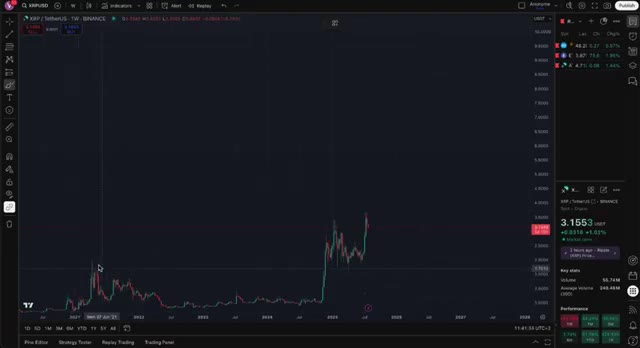
🔍 AgrandirNous voyons des intégrations avec les systèmes bancaires. Nous voyons une adoption dans le monde réel. Nous voyons des demandes de ETF, des intégrations DeFi, la tokenisation d'actifs. Et c'est pourquoi je crois que le XRP à 10 dollars n'est que le début. Je ne dis pas que le XRP atteindra 100 dollars demain. Ce n'est pas réaliste dans ce cycle. Mais si nous voyons déjà une multiplication par 3 ou 4 à partir d'ici en l'espace de quelques mois, et que le marché haussier se poursuit jusqu'en 2025, alors 20 à 30 dollars ne semble plus si fou que ça. Et encore une fois, si le Bitcoin monte plus haut, ces objectifs augmentent en conséquence. Alors, comment est-ce que je joue le coup ? Simple. Je conserve du XRP à long terme sur mon
Interface & Outils : Site web financier 'AIinvest' et plateforme de graphiques boursiers TradingView.
Contenu textuel & Code : Articles d'actualité financière, barres de cotation (BAC, ETH, SOL, XRP) et graphique de prix avec axes temporels (2018 à 2027) et indicateurs de performance de XRP.
Action / Démonstration : Présentation d'une analyse comparative sur la tokenisation d'actifs et visualisation de l'évolution technique à long terme du cours de XRP sur TradingView.
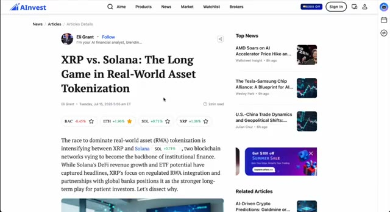
🔍 Agrandir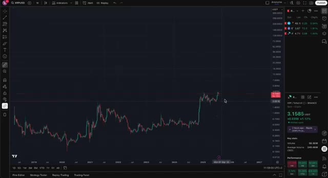
🔍 Agrandirgrand livre, et je trade les hausses et les baisses à court terme sur WOO X. Je ne veux jamais vendre mes avoirs principaux, mais le trading me permet de profiter de la volatilité sans toucher à mon sac principal. Et grâce au bonus allant jusqu'à 30 000 $ sur WOO X, il n'a jamais été aussi facile de commencer. Déposez, tradez et gagnez. C'est aussi simple que ça. Laissez-moi résumer. XRP explose, mais je pense toujours que c'est le début. Ce n'est pas le moment de paniquer ou de douter. C'est le début de la cassure que nous attendons tous. Si vous êtes déjà dedans, félicitations. Si ce n'est pas le cas, faites vos recherches, étudiez les graphiques,
Interface & Outils : WEEX (interface de trading et page promotionnelle) et graphique TradingView (Binance).
Contenu textuel & Code : Paire XRP/USDT, chandeliers hebdomadaires, volumes, carnet d'ordres et interface de passage d'ordres (Limit/Market).
Action / Démonstration : Présentation de l'interface de trading et visualisation historique des prix d'une cryptomonnaie avec l'outil Replay.
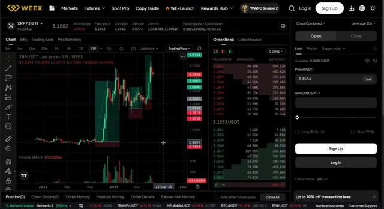
🔍 Agrandir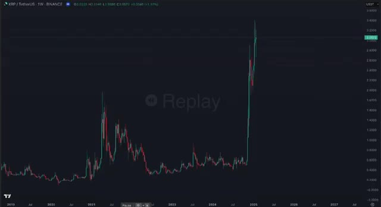
🔍 Agrandircomprenez les cycles, parce que cette course ne fait que commencer. Assurez-vous d'aimer la vidéo, de vous abonner à la chaîne et d'activer la cloche parce que nous allons aller loin dans ce marché haussier et je serai là à chaque étape et si vous voulez rejoindre weeks réclamez votre bonus et commencez à trader avec moi le lien est juste en dessous et si vous voulez connaître les dix autres altcoins que j'achète en ce moment et qui pourraient faire x30 cliquez sur la vidéo sur votre écran dès maintenant rendons cette saison légendaire
Interface & Outils : YouTube (Interface web de visionnage et de navigation de chaînes).
Contenu textuel & Code : Titres de vidéos, vignettes de tutoriels sur WEEX et Bybit, ainsi que des listes de lecture de cryptomonnaies. [DESC_IMAGE_3] Navigation dans les vidéos de la chaîne pour illustrer les offres et bonus mentionnés dans l'audio.
Action / Démonstration : Explications face caméra et analyse conceptuelle des marchés.